<link rel="import" href="../tile.html">
<link rel="import" href="../../socket-connection.html">

<dom-module id="hb-bimba-wro2-tile">

  <template>
    <hb-tile id="tile">
      <value>
        <template is="dom-repeat" items="{{times}}" indexAs="index">
          <div class="bimba-item fade">
            <span>{{item.line}}</span>
            <span>{{item.direction}}</span>
            <span><span>{{item.minutes}}</span> min</span>
          </div>
        </template>
      </value>

      <description>
        <div class="hb-tile__footer">
          <div class="hb-tile--icon">
            
          </div>
          <p>{{busStop.name}}</p>
        </div>
      </description>
    </hb-tile>

    <socket-connection endpoint="bimba" on-data="onData">
    </socket-connection>

  </template>
  <script>
    Polymer({
      is: 'hb-bimba-wro2-tile',
      homeOfficeCount: 0,
      onData: function (ev, data) {
        var results = data[1];
        this.busStop = results.bollard;
        this.times = results.times.slice(0, 5);
        this.$.tile.ping();
      }
    });
  </script>
</dom-module>
